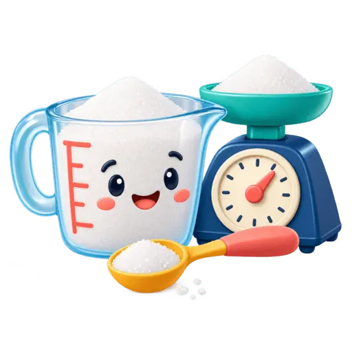

FERRAMENTA GRATUITA
Conversor culinário
Descubra quantos gramas há em uma ou mais xícaras conforme o ingrediente.

Peso aproximado
Quanto pesa uma xícara de farinha, açúcar e outros ingredientes?
Xícara mede volume; grama mede massa. Por isso, uma xícara de farinha não pesa o mesmo que uma xícara de açúcar, mesmo quando a capacidade da xícara é igual.
Como usar o conversor culinário
Escolha o ingrediente, informe quantas xícaras deseja converter e a capacidade da xícara em mililitros. A ferramenta estima o peso em gramas com base no ingrediente selecionado.
Por que o resultado é aproximado?
A densidade pode variar conforme marca, umidade, compactação e modo de encher a xícara. Por isso, receitas que exigem maior precisão devem usar balança culinária.
Dúvidas frequentes
Uma xícara sempre tem 240 mL?
Não. Existem diferentes padrões e utensílios. Por isso, a ferramenta permite informar a capacidade da xícara usada.
Posso converter líquidos?
Para conversões puramente de volume, use o conversor de volume.
Você também pode usar o conversor de peso e a regra de três simples para ajustar receitas.